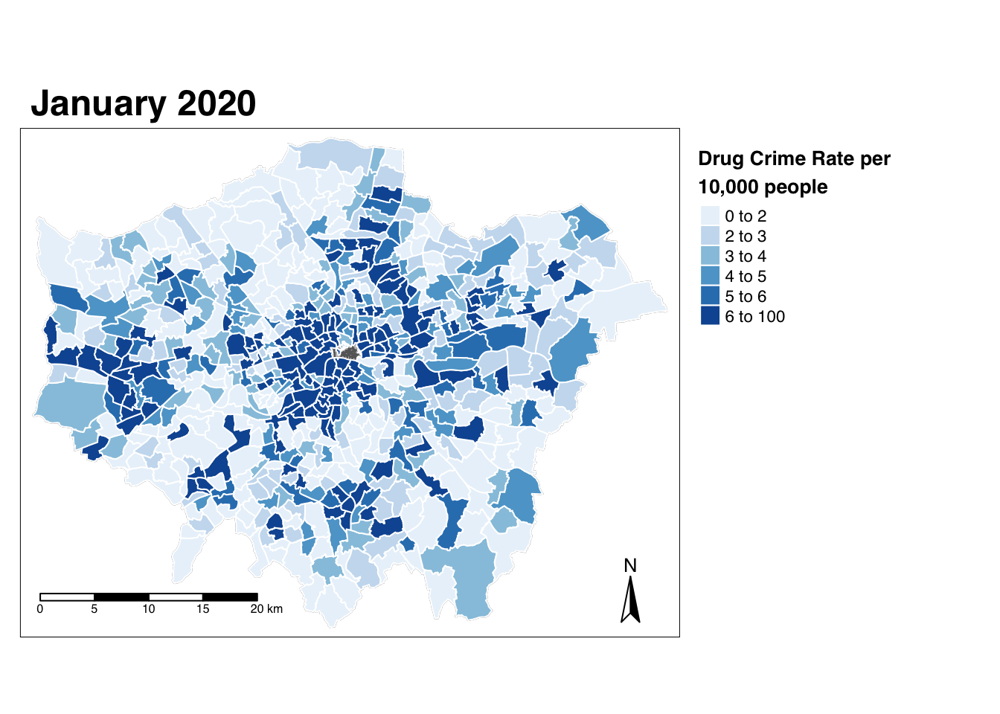

13 For Loops and Functions for Automated Data Processing & Visualisation (Optional)
This optional tutorial builds on the analysis conducted in Week 5’s Programming for GIScience and Spatial Analysis, however all code in this tutorial can be run as a standalone script.
In many analytical scenarios, we often want to repeat the same processing and analysis for different versions of the same datasets (e.g. multiple months, years) and/or variables (e.g. different types of crime).
To achieve this, your current approach might be to copy and paste your code, edit your file path or variable names.
This approach is very inefficient, resulting in long scripts and can lead to quite a few bugs in your code, or, even worse, mistakes in your analysis that you don’t “see”!
In programming for data analysis (whether in R, Python or other programming languages), there are two main approaches that you can use to improve the efficiency (and guarantee more accuracy!) of your code when you are looking to repeat your workflow.
Firstly, we have loops, which we have briefly come across in our practicals in the previous few weeks. There are three types of loops we can use in programming: for, do and while. We tend to use these loops to repeat a specific set of processing given a condition or statement, e.g. we often use if statements with our for loops.
We will focus on for loops today as they form the basic building blocks to understanding how loops work; however, we highly recommend afterwards that you read into the purpose and applications of the other two loop types.
Secondly, we have the use of a function, which is a block of organized, reusable code that is used to perform a single, related action. We’ve come across functions throughout our module by calling them using the function name, e.g. print(), and providing the function with its required parameters, e.g. a dataset, a query or measure.
But, what you might not have realised is that we can create our own function to perform a specific action that we want to repeat many times. To create a function, we need to define it; this means writing the block of code that stipulates what our function does, as well as detailing the various parameters our function will take. We’ve actually done this several times in our previous practicals, but we haven’t fully explained what we were doing or how it works!
By using loops and functions in our scripts, we can tell R to repeat the same steps through, for instance, all the rows of a dataframe.
Writing our code in functions also allows us (or whoever the intended users of our function are) to easily change the parameters of the inputs and processes contained within the function for a different output.
In this Optional Practical, we’ll see how we can use these two structures within our code to process an extensive amount of data that we’ve used within a previous practical: crime data from 2020 (used in Practicals 4 and 5).
Instead of focusing solely on theft as our crime type and mapping only a month at a time, we’ll look to build a function (with for loops inside!) that enables us to automate all processing and even mapping for any crime type within the dataset for each month. We’ll simply only need to provide our function with the crime type we want to map (and of course, the dataset)!
Automating the ingestion and mapping of crime data across years and crime type
In Week 5, we had our first introduction into how we can use programming for spatial analysis.
To refresh your memory, we looked at how we could wrangle our previously created all_theft_df (see Week 4!) that contained all theft for London in 2020 to create a crime count per month for each ward.
We then joined this resulting dataframe to our ward shapefile (which also contained our ward population data) and produced a crime rate for each ward for each month.
We then created a map for January 2020 as part of our learning of the tmap library. For your assignments that week, I also asked for you to produce an additional map for another month in the year.
The thing is the original dataset we used - crime in London - offers so much more opportunity for analysis beyond just looking at theft in terms of crime type (we already had a look at bike theft in Week 7 for example!) and we also have access to many more months and years worth of data - and even Areas Of Interest!
There is simply so much analysis that could be done with this data and we barely touched the surface! However, much of the analysis we want to do is the same process that we went through in Week 5 - so how can programming help us with this analysis?
Essentially, we will write a function which allows us to automate this process for any type of crime in the police dataset (i.e. the crime type becomes a parameter in the function) and within this function, there is a for loop that generates a map for each month, which is then also turned into a GIF.
All of this is explained in further detail below!
Optional Practical 3: Incorporating Loops and Functions in Spatial Analysis
For this optional practical, we will utilise the London crime data that we used in Weeks 4 and 5 of the module.
As a detailed methodology recap, in those weeks, in terms of data processing, we:
- Obtained crime data of every kind that was available in the wards of London by month of the year in 2020;
- Combined these individual datasets into a single one which showed over 1,000,000 crimes committed and recorded throughout 2020;
- Filtered the dataset to keep counts of only crimes under the class ‘Theft from the person’;
- Created a summary dataset which showed the counts of ‘Thefts from the person’ by month;
- Created a summary dataset which tallied the counts of ‘Thefts from the person’ by month for each ward;
- Normalised this dataset by the 2019 mid-year population to create a theft crime rate;
- Created a map for the distribution of theft crime rate in January 2020.
You can imagine that the process would very time-consuming if it had to be repeated manually across all months and types of crime - an objective which might be very real if you wanted a wider scope of analysis.
In this week, we are going to see how we utilise automation in our code to repeat what are largely identical steps with numerous minor tweaks each time (e.g. the month or crime type).
Overall, our output from today will be to create a function that automates the creation of an animated GIF map that shows the distribution of a particular crime type in London across the months of 2020.
The steps will be similar to what we had already achieved in Weeks 4 and 5, but with some tweaks so that the code is reusable across the different months and crime types, rather than being specific to thefts occurring only in January 2020.
The resulting function can be further built on, if you so wish, to enable the ingestion of datasets from different years and/or police services.
Defining a function: the basics
To define a function in R, we follow a very specific syntax (each programming language has its own syntax to how to define a function).
Specifically, our syntax for defining a function in R is:
name_of_function <- function(argument1, argument2) {
diff.12 <- argument1 - argument2
print("diff.12")
}where:
function()is the keyword that tells R we want to define a function- The commands that the function should run when called are enclosed in the ‘{}’ brackets.
- Within the parantheses of
function()you can place as many arguments as you wish, or as you see necessary. The more arguments, the higher degree of customisation the user of the function enjoys, but it may also seem more confusing if these users are not familiar with the use cases of the function. - A function can be defined without any mandatory argument input from the user, but it will still have to be called with parantheses, i.e. the user has to type (either into the console or the script)
name_of_function().
As part of this definition, a function has to have parameters defined by its creator that users can then input according to their needs (as we have done in our previous practicals).
We will be defining a function called plot_crime() which, when called by a user, takes the form of:
plot_crime(all_crime_dataset, type_of_crime)
As you can see, the function has two parameters, where all_crime_dataset refers to the dataset of all the months of crime that will be used, and type_of_crime is the type of crime that the user wants to map and study.
The structure of today’s practical is such that we will start off by creating a very basic function, and then go through steps that you will already be familiar with, while adding components into our function to make it richer in functionality as we go by.
Essentially we will build our function as we go so make sure you update your code rather than repeat previous code you’ve already entered.
The workflow in our function will be:
Load/parse the
all_crime_dataset, which is the merged dataset of crimes in London across all months within a given timespan. We previously called this datasetall_crime_df.Filter the
all_crime_datasetdataframe by thetype_of_crimeof the user’s choice (this can only be from a range of arguments as per howcrime_typeis defined by the data.police.uk data)- Do ALL the data cleaning outlined in the tutorial in Week 5 so we end up with a dataframe that details that crime type by ward by month:
- Take our
all_crime_datasetand wrangle it to produce a dataframe with a ward per row with a crime count for each month in our fields. - Join this dataframe to our
ward_population_2019shapefile (in yourworkingfolder) and then produce a crime rate for each month, for each ward.
Use a ‘for’ loop and the
tmaplibrary to produce a crime map for each month individually, and export these maps.Read in the files exported from step 4 to create an animated GIF compilation of crime maps.
Let’s get started!
Setting up your script
Open a new script within your GEOG0030 project (Shift + Ctl/Cmd + N) and save this script as
OP3-crime-GIF-function.r.At the top of your script, add the following metdata (substitute accordinlgy):
- Now let’s add all of the libraries we’ll be using today:
# Libraries used in this script:
library(tidyverse)
library(janitor)
library(here)
library(magrittr)
library(sf)
library(tmap)
library(magick)As another reminder, we’ll be using sf to read and load our spatial data, use the tidyverse libraries to complete our data wrangling and then use the tmap library to visualise our final maps.
magick is a library that we will use at the very end to string together our PNG files (static images) into an animated GIF.
Loading our datasets
We’re going to load the three the datasets we need today straight away:
- The
all_crime_2020.csvthat we exported in Weeks 4/5; - The
ward_population_2019.shpwe created in Week 3; - The look-up table we downloaded from the ONS website which allows us to find the corresponding wards that a crime took place in, given their LSOA code.
First, let’s load our all_crime_2020.csv into a dataframe called all_crime_df.
# Read in our all_crime_2020 csv from our raw crime data folder
all_crime_df <- read_csv("data/raw/crime/all_crime_2020.csv") %>% clean_names()You should see these rows display in your console.
Great, the dataset looks as we remember, with the different fields, including, importantly for this week, the LSOA_code which we’ll use to process and join our data together (you’ll see this in a second!).
Next, let’s load our first ever spatial dataset into R-Studio - our ward_population_2019.shp.
We’ll store this as a variable called ward_population and use the sf library to load the data:
# Read in our ward_population_2019 shp from our working data folder
ward_population <- st_read("data/working/ward_population_2019.shp", stringsAsFactors = FALSE)## Reading layer `ward_population_2019' from data source `/Users/Jo/Code/GEOG0030/data/working/ward_population_2019.shp' using driver `ESRI Shapefile'
## Simple feature collection with 657 features and 7 fields
## Geometry type: POLYGON
## Dimension: XY
## Bounding box: xmin: 503568.2 ymin: 155850.8 xmax: 561957.5 ymax: 200933.9
## CRS: 27700By typing in st_crs(ward_population), again in the console, we can see that the shapefile uses the coordinate reference system (CRS) of British National Grid. This is important because our datasets should always use the same CRS.
Finally, we will load in the lsoa_ward_lookup.csv file, which should be in your data -> raw -> boundaries subfolder.
If you do not still have this file downloaded from a previous week, you can still find a file on the ONS website here.
**Note that this file has been updated since the tutorial from Weeks 4 and 5 were written, so if you download the dataset a new, the columns have changed from a 2018 reference to 2020, e.g. from WD18CD to WD20CD.
# Read in our lsoa_ward_lookup csv from our raw boundaries data folder
lsoa_ward_lookup <- read_csv("data/raw/boundaries/lsoa_ward_lookup.csv")## Warning: 1909 parsing failures.
## row col expected actual file
## 32801 WD18NMW 1/0/T/F/TRUE/FALSE Yr Wyddgrug - Broncoed 'data/raw/boundaries/lsoa_ward_lookup.csv'
## 32802 WD18NMW 1/0/T/F/TRUE/FALSE Yr Wyddgrug - Dwyrain 'data/raw/boundaries/lsoa_ward_lookup.csv'
## 32803 WD18NMW 1/0/T/F/TRUE/FALSE Yr Wyddgrug - De 'data/raw/boundaries/lsoa_ward_lookup.csv'
## 32804 WD18NMW 1/0/T/F/TRUE/FALSE Yr Wyddgrug - De 'data/raw/boundaries/lsoa_ward_lookup.csv'
## 32805 WD18NMW 1/0/T/F/TRUE/FALSE Yr Wyddgrug - Gorllewin 'data/raw/boundaries/lsoa_ward_lookup.csv'
## ..... ....... .................. ....................... ..........................................
## See problems(...) for more details.Filter the merged dataframe by the type_of_crime of the user’s choice
Here, we will start to define our function, incrementally adding in features into it such that, eventually, it is able to process everything from data wrangling to the final output that is the GIF animation of a specific type of crime in London across 2020.
As stated above, the basic syntax of a function in R look something like this:
name_of_function <- function(argument1, argument2) {
diff.12 <- argument1 - argument2
print("diff.12")
}Our function plot_crime() will take two arguments - the input dataset of all crimes, and the crime type we want to filter our overall dataset by.
We therefore want to include these as parameters as we initially define our function.
We also want to include what action the function should do.
In this case, we’ll keep what our function does to something very simple: * We’ll filter our dataset by the supplied crime type and then count the total number of records of that crime in London. * We’ll then print this value with an output statement.
This is what our function will return to us when called.
To use our function, defined below, you’ll need to execute all of the code. You shuold see the plot_crime function added to your list of functions in your Environment pane.
# Define our plot_crime() function
plot_crime <- function(all_crime_dataset, type_of_crime) {
# Function filters the dataframe containing all crimes based on the type of crime chosen
filtered_crime_df <- dplyr::filter(all_crime_dataset, crime_type == type_of_crime)
#prints the number of crimes in London of that type
print(paste0("In 2020, there were ", nrow(filtered_crime_df), " instances of crimes related to ", type_of_crime, " in London."))
}In the function above, note that, because of the way we wrote the function, each argument will have to take a specific object format in R.
The all_crime_dataset has to be a dataframe and type_of_crime has to be a string (i.e. alphanumeric characters enclosed in inverted commas). If, in future use, a user supplies the wrong object format, the function will simply not work.
Note also how, in functions, the variables we are including in the processing done by the code take on specific names that exist only within the context of the function: in this instance, all_crime_dataset and type_of_crime. Although the dataset we are going to use as the input for the function exists in the R environment and is called all_crime_df, we still have to write the code in the function with reference to all_crime_dataset and later on filtered_crime_df throughout the function.
These types of variables are local to that function, and so are often known as local variables.
Variables that exist outside of functions (i.e. that are accessible/usable for any processing/analysis within our script) are often known as global variables.
Beyond our print statement, functions usually do return some type of object to the wider R environment, for instance a wrangled dataset or visual output. However, since we don’t have that yet, we’ve simply included our print statement as a placeholder that essentially is a notification message to show our code has run.
Using print statements to this effect is very common when building functions (and loops) - they do not need to be as complicated as the statement we’ve used today, but can be inserted after specific lines of code to try to identify where a bug is occuring if your code does not run or produces the wrong output.
That’s a lot of new programming concepts and techniques to understand, so for now let’s go ahead and try running the very basic function.
How to write your code in this practical
You’ve just written out the first iteration of our function, and now, below it, you’ll write out the line of code below.
This line, just like every line you’ve written involving a function, will call our function we’ve just written above.
Within our function, we provide our parameters, our dataset and our crime type.
We’ll be updating our function code as we progress in the practical and, in some iterations, you’ll need to update the code below as we also move forward. You’ll see each time we run the function, we might utilise other functions (such as str() or head()) to double-check our function output.
We also start storing the output of our function in some cases, so we have a dataframe we can access and use.
Within your script, ultimately you’ll only want to have one version of our function code and one line of code that calls our function (unless you want to call our function on other crime types!). Plus then any other code that we need for these two lines to work (e.g. our libraries we’ve loaded above).
Call our function using the line of code below:
# Call our function on our dataset
# Function filters the dataframe containing all crimes based on the type of crime chosen
plot_crime(all_crime_df, "Drugs")## [1] "In 2020, there were 52265 instances of crimes related to Drugs in London."The all_crime_df used here includes data from December 2020, so your numbers will look different if you used the file that you created based on just data from January till November 2020.
For this data, we counted 52,265 drug-related crimes in 2020.
Matching the spatial units in our datasets
Once we’ve filtered our dataset to only those records with the selected crime type, the next step in our process is to match each record to the correct ward.
To do so, we’ll use the look-up table to join the relevant ward code to each observation based on the LSOA in which each record of crime is reported to have occured.
To refresh your memory on this process, we recommend revisiting the Processing our crime data to create our required output data frame section within Week 5’s practical.
In summary, we use the left_join() function from the dplyr libraryto join matching rows from our lsoa_ward_lookup dataframe to our all_crime_df dataframe but make sure to keep all rows in the latter.
We need to add this step to our function.
We’ll also use the pipe function, %>%, to pipe the output from the previous step of our function into the next.
# Define our plot_crime() function
plot_crime <- function(all_crime_dataset, type_of_crime) {
# Function filters the dataframe containing all crimes based on the type of crime chosen
filtered_crime_df <- dplyr::filter(all_crime_dataset, crime_type == type_of_crime) %>%
# Join lsoa_ward_lookup rows to the all_crime_df on our two lsoa code fields
left_join(lsoa_ward_lookup, by = c("lsoa_code" = "LSOA11CD")) %>%
# Reduce our dataframe to only required columns using the select function
# Note, if you are using the updated lookup table, change WD18CD and WD18NM to WD20CD and WD20NM respectively
dplyr::select(crime_id, month, longitude, latitude, lsoa_name, lsoa_code, crime_type, WD18CD, WD18NM)
# Placeholder - returns the dimensions, i.e. rows x columns of the wrangled dataset
dim(filtered_crime_df)
}Once again, we use a placeholder to check if our function is running - and, in this case, producing the expected output.
If you’ve forgotten, the dim() function returns the dimensions of the resulting dataset that is created by the function - the two numbers returned are the number of rows and columns (fields), respectively.
Let’s call our function again and check the output:
## [1] 52265 9Because we listed above 9 arguments i.e. fields to remain in the filtered dataframe (through select()), you should have 9 as the second number in the output for dim(filtered_crime_df).
Aggregating data by ward and month
We now have our dataset readyfor the next bit of data wrangling: aggregating our crime by ward for each month in 2020.
Firstly, we will take our filtered all_crime_dataset and wrangle it to produce a dataframe with a ward per row with a crime count for each month in our fields.
**Note, again, in the code below, we are using the 2018 look-up table. If you have downloaded the 2020 version, remember to update the relevant field names to reflect the 20 year (not 18).
*Note, we add a line of white space into our function below to make it easier to read. You do not need to keep this line in, but you MUST ensure that for our new line of code, the indent is at the level shown below (i.e. it is at the same level as the filtered_crime_df line).
# Define our plot_crime() function
plot_crime <- function(all_crime_dataset, type_of_crime) {
# Function filters the dataframe containing all crimes based on the type of crime chosen
filtered_crime_df <- dplyr::filter(all_crime_dataset, crime_type == type_of_crime) %>%
# Join lsoa_ward_lookup rows to the all_crime_df on our two lsoa code fields
left_join(lsoa_ward_lookup, by = c("lsoa_code" = "LSOA11CD")) %>%
# Reduce our dataframe to only required columns using the select function
dplyr::select(crime_id, month, longitude, latitude, lsoa_name, lsoa_code, crime_type, WD18CD, WD18NM)
# Group our crimes by ward, then count the number of thefts occuring in each month
crime_count_month_ward <- group_by(filtered_crime_df, WD18CD) %>% count(month)
# returns (to the RStudio environment) the aggregated dataset, by ward and by month
return(crime_count_month_ward)
}In the two new lines of code above, we create a new, aggregated dataframe, crime_count_month_ward which we then return() to the R environment as an output of the function.
This is important because, when working in functions, the variables that we define and create usually stay in the local environment but get lost if we do not explicitly return them to the global environment (i.e. outside the function) using the return() function.
With the addition of the return() function, take a look at how we can use the function to assign its output to an object that is then stored in the global environment.
Update your “call” code - store the output to a variable and then check the variable.
# Store the returned dataframe to a global variable called drugs_month_ward_df
drugs_month_ward_df <- plot_crime(all_crime_df, "Drugs")
# Print the number of unique values of wards and months
length(unique(drugs_month_ward_df$WD18CD))## [1] 735## [1] 12You’ll see from the output above (once again based on Jan-Dec 2020 data) that we have data for 735 unique wards across 12 months, and a count of the number of drug-related cases for each combination of these two variables.
You should also see that our global variable is the drugs_month_ward_df variable; the local variable, crime_count_month_ward, stays within our function and is not present within our global environment.
Pivoting and re-formatting our data
In order to join our monthly crime dataset by ward to our ward shapefile, we need to change the format of our data.
Currently, it is ‘long’ in the sense that there are many rows but few columns. Each row contains the counts of drug-related crimes in every ward for each month.
However, we want to make it ‘wider’, so that each row represents a single ward, each field/column represents a month in 2020, and the cells therefore contains the crime counts for the respective ward for the respective month.
To transform our data from long to wide, we will use the pivot_wider() function from the tidyr package (as we did in Week 5 - remember, you can always head back to this practical for a refresher on our methods).
# Define our plot_crime() function
plot_crime <- function(all_crime_dataset, type_of_crime) {
# Function filters the dataframe containing all crimes based on the type of crime chosen
filtered_crime_df <- dplyr::filter(all_crime_dataset, crime_type == type_of_crime) %>%
# Join lsoa_ward_lookup rows to the all_crime_df on our two lsoa code fields
left_join(lsoa_ward_lookup, by = c("lsoa_code" = "LSOA11CD")) %>%
# Reduce our dataframe to only required columns using the select function
dplyr::select(crime_id, month, longitude, latitude, lsoa_name, lsoa_code, crime_type, WD18CD, WD18NM)
# Group our crimes by ward, then count the number of thefts occuring in each month
crime_count_month_ward <- group_by(filtered_crime_df, WD18CD) %>% count(month) %>%
#re-structure dataframe from 'long' to 'wide'; the month variable will be the names of the fields (columns)
pivot_wider(names_from = month, values_from = n)
# returns, to the global environment, the aggregated dataset by ward and by month
return(crime_count_month_ward)
}Testing the function below, we see that instead of 3 fields like before, we now have 13 - 1 for the ward code and 12 for each month of 2020.
Update and run the call code:
# Call our function on our dataset and store as a variable
drugs_month_ward_df <- plot_crime(all_crime_df, "Drugs")
# Check dimensions of our resulting data frame
dim(drugs_month_ward_df)## [1] 735 13One final thing we want to do is clean up the names of our fields to mean a little more to us.
Let’s transform our numeric dates to text dates and change also the field WD18CD (or WD20CD) in the process.
Note, you will have to remove 'dec_2020' from the list of strings we assign to names(crime_count_month_ward) if you are not using a dataset that includes December data.
# Define our plot_crime() function
plot_crime <- function(all_crime_dataset, type_of_crime) {
# Function filters the dataframe containing all crimes based on the type of crime chosen
filtered_crime_df <- dplyr::filter(all_crime_dataset, crime_type == type_of_crime) %>%
# Join lsoa_ward_lookup rows to the all_crime_df on our two lsoa code fields
left_join(lsoa_ward_lookup, by = c("lsoa_code" = "LSOA11CD")) %>%
# Reduce our dataframe to only required columns using the select function
dplyr::select(crime_id, month, longitude, latitude, lsoa_name, lsoa_code, crime_type, WD18CD, WD18NM)
# Group our crimes by ward, then count the number of thefts occuring in each month
crime_count_month_ward <- group_by(filtered_crime_df, WD18CD) %>% count(month) %>%
#re-structure dataframe from 'long' to 'wide'; the month variable will be the names of the fields (columns)
pivot_wider(names_from = month, values_from = n)
# Rename our fields in our data frame
names(crime_count_month_ward) <- c('ward_code', 'jan_2020', 'feb_2020', 'mar_2020', 'apr_2020', 'may_2020', 'jun_2020', 'jul_2020', 'aug_2020', 'sept_2020', 'oct_2020', 'nov_2020', 'dec_2020')
# returns, to the global environment, the aggregated dataset by ward and by month
return(crime_count_month_ward)
}We check the outcome of this field renaming below.
Update and run the call code:
# Call our function on our dataset
drugs_month_ward_df <- plot_crime(all_crime_df, "Drugs")
# Checks the new column names of our output dataframe
names(drugs_month_ward_df)## [1] "ward_code" "jan_2020" "feb_2020" "mar_2020" "apr_2020" "may_2020"
## [7] "jun_2020" "jul_2020" "aug_2020" "sept_2020" "oct_2020" "nov_2020"
## [13] "dec_2020"And we’re now done! We have our final dataframe to join to our ward_population spatial dataframe.
Excellent!
Joining our spatial and non-spatial data and final cleaning of data
The final step to our data processing is to join the dataframe that our function thus far produces to our ward_population_2019 shapefile (in your working folder) in order to produce a crime rate (per number of residents) for each month, for each ward.
We’ll then also be able to map the crime rate!
As another reminder, the join approach we used earlier between our all_crime_df and our lsoa_ward_lookup is the exact same approach we need for this, even when dealing with spatial data.
Let’s go ahead and use the same left_join function to join our two dataframes together - in this case, we want to keep all rows in our ward_population spatial dataframe, so this will be our x dataframe, whilst the crime_count_month_ward will be our y.
# Define our plot_crime() function
plot_crime <- function(all_crime_dataset, type_of_crime) {
# Function filters the dataframe containing all crimes based on the type of crime chosen
filtered_crime_df <- dplyr::filter(all_crime_dataset, crime_type == type_of_crime) %>%
# Join lsoa_ward_lookup rows to the all_crime_df on our two lsoa code fields
left_join(lsoa_ward_lookup, by = c("lsoa_code" = "LSOA11CD")) %>%
# Reduce our dataframe to only required columns using the select function
dplyr::select(crime_id, month, longitude, latitude, lsoa_name, lsoa_code, crime_type, WD18CD, WD18NM)
# Group our crimes by ward, then count the number of thefts occuring in each month
crime_count_month_ward <- group_by(filtered_crime_df, WD18CD) %>% count(month) %>%
#re-structure dataframe from 'long' to 'wide'; the month variable will be the names of the fields (columns)
pivot_wider(names_from = month, values_from = n)
# Rename our fields in our data frame
names(crime_count_month_ward) <- c('ward_code', 'jan_2020', 'feb_2020', 'mar_2020', 'apr_2020', 'may_2020', 'jun_2020', 'jul_2020', 'aug_2020', 'sept_2020', 'oct_2020', 'nov_2020', 'dec_2020')
# Join theft by month to the correct wards in our ward_population dataframe
filter_crime_ward_sdf <- left_join(ward_population, crime_count_month_ward, by = c("GSS_CODE" = "ward_code"))
# returns, to the global environment, the new sdf
return(filter_crime_ward_sdf)
}Update and run the call code:
# Call our function on our dataset
drugs_ward_sdf <- plot_crime(all_crime_df, "Drugs")
# Check the structure of our newly merged spatial dataframe
str(drugs_ward_sdf)## Classes 'sf' and 'data.frame': 657 obs. of 20 variables:
## $ NAME : chr "Chessington South" "Tolworth and Hook Rise" "Berrylands" "Alexandra" ...
## $ GSS_CODE : chr "E05000405" "E05000414" "E05000401" "E05000400" ...
## $ DISTRICT : chr "Kingston upon Thames" "Kingston upon Thames" "Kingston upon Thames" "Kingston upon Thames" ...
## $ LAGSSCODE : chr "E09000021" "E09000021" "E09000021" "E09000021" ...
## $ HECTARES : num 755 259 145 269 188 ...
## $ NONLD_AREA: num 0 0 0 0 0 0 0 0 0 0 ...
## $ POP2019 : num 10409 10522 9830 9899 11177 ...
## $ jan_2020 : int 1 3 4 1 6 11 NA 1 NA 3 ...
## $ feb_2020 : int 3 NA 1 3 9 5 1 1 2 NA ...
## $ mar_2020 : int 3 1 1 1 2 9 NA NA 1 4 ...
## $ apr_2020 : int 7 2 5 9 7 5 2 7 2 6 ...
## $ may_2020 : int 3 8 10 3 9 18 5 11 6 6 ...
## $ jun_2020 : int 5 3 1 6 3 1 4 1 3 3 ...
## $ jul_2020 : int 2 5 3 3 3 8 4 2 2 3 ...
## $ aug_2020 : int 3 1 4 2 1 8 2 1 2 4 ...
## $ sept_2020 : int 2 2 1 1 3 6 NA 6 4 5 ...
## $ oct_2020 : int 1 2 2 4 2 5 NA 6 3 5 ...
## $ nov_2020 : int 3 3 4 4 5 5 1 2 3 9 ...
## $ dec_2020 : int NA 2 2 2 4 3 NA 2 5 3 ...
## $ geometry :sfc_POLYGON of length 657; first list element: List of 1
## ..$ : num [1:406, 1:2] 516402 516407 516413 516420 516428 ...
## ..- attr(*, "class")= chr "XY" "POLYGON" "sfg"
## - attr(*, "sf_column")= chr "geometry"
## - attr(*, "agr")= Factor w/ 3 levels "constant","aggregate",..: NA NA NA NA NA NA NA NA NA NA ...
## ..- attr(*, "names")= chr "NAME" "GSS_CODE" "DISTRICT" "LAGSSCODE" ...In the next set of additions of code to our function, we do some “quality assurance” - we’re going to check that each of our wards has at least one occurrence of crime over the eleven months. We do this by computing a new column that totals the number of thefts over the 12 month period. From some weeks ago, you may remember that only those wards in the City of London (that are to be omitted from the analysis) should have a total of zero.
We can compute a new column by using the mutate() function from the dplyr library. We use the rowsums() function from the base library to compute the sum of rows, which we use the across() function from the dplyr library to parse. Then, to make sure our data is as correct as possible prior to visualisation, we will remove our City of London wards that do not have any data (crime or population), and then convert the NAs in our theft counts to 0.
# Define our plot_crime() function
plot_crime <- function(all_crime_dataset, type_of_crime) {
# Function filters the dataframe containing all crimes based on the type of crime chosen
filtered_crime_df <- dplyr::filter(all_crime_dataset, crime_type == type_of_crime) %>%
# Join lsoa_ward_lookup rows to the all_crime_df on our two lsoa code fields
left_join(lsoa_ward_lookup, by = c("lsoa_code" = "LSOA11CD")) %>%
# Reduce our dataframe to only required columns using the select function
dplyr::select(crime_id, month, longitude, latitude, lsoa_name, lsoa_code, crime_type, WD18CD, WD18NM)
# Group our crimes by ward, then count the number of thefts occuring in each month
crime_count_month_ward <- group_by(filtered_crime_df, WD18CD) %>% count(month) %>%
#re-structure dataframe from 'long' to 'wide'; the month variable will be the names of the fields (columns)
pivot_wider(names_from = month, values_from = n)
# Rename our fields in our data frame
names(crime_count_month_ward) <- c('ward_code', 'jan_2020', 'feb_2020', 'mar_2020', 'apr_2020', 'may_2020', 'jun_2020', 'jul_2020', 'aug_2020', 'sept_2020', 'oct_2020', 'nov_2020', 'dec_2020')
# Join theft by month to the correct wards in our ward_population dataframe
filter_crime_ward_sdf <- left_join(ward_population, crime_count_month_ward, by = c("GSS_CODE" = "ward_code")) %>%
# Creates a new column, ward_crime_total, which calculates the total incidence of selected crime in a ward
mutate(ward_crime_total = rowSums(across(8:19), na.rm = T)) %>%
# Filter out City of London wards with a crime count of 0 or a population of 0
# Note the logic is a little complicated here to achieve the above filter
filter(ward_crime_total > 0 | DISTRICT != "City and County of the City of London") %>%
# We're also going to remove the ward of Vintry, which whilst it has a positive crime count, it does not contain a population
filter(NAME != "Vintry")
# Replace all NAs in our dataframe with 0
filter_crime_ward_sdf[is.na(filter_crime_ward_sdf)] = 0
return(filter_crime_ward_sdf)
}Run the updated function on our dataset and check the results - you should see the new column at the end of our table.
# Call our function on our dataset
drugs_ward_sdf <- plot_crime(all_crime_df, "Drugs")
# View the first five lines of our resulting dataset
View(head(drugs_ward_sdf))The final thing we need to do before we can map our theft data is, of course, compute a crime rate per month for our all_theft_ward_sdf dataframe.
We have our POP2019 column within our all_theft_ward_sdf dataframe - we just need to figure out the code that allows us to apply our calculation that we’ve used in our previous practicals (i.e. using the Attribute/Field Calculator in Q-GIS: value/POP2019 * 10000) to each of our monthly crime counts.
Once again, after a bit of searching online for some suggestions, we can find out that the mutate() function comes in handy - and we can follow a specific approach in our code that allows us to apply the above equation to all of our columns within our dataframe that contain a crime count.
We’re going to create a new dataframe to store our crime rate as when we apply our calculation to our current dataframe, we are actually transforming the original values for each month and not creating a new column per se for each month.
This is a good approach to reducing the size of our dataframes and ensuring the data within each is specific - having both the crime count and crime rate within the same dataframe would result in 24 columns!
# Define our plot_crime() function
plot_crime <- function(all_crime_dataset, type_of_crime) {
# Function filters the dataframe containing all crimes based on the type of crime chosen
filtered_crime_df <- dplyr::filter(all_crime_dataset, crime_type == type_of_crime) %>%
# Join lsoa_ward_lookup rows to the all_crime_df on our two lsoa code fields
left_join(lsoa_ward_lookup, by = c("lsoa_code" = "LSOA11CD")) %>%
# Reduce our dataframe to only required columns using the select function
dplyr::select(crime_id, month, longitude, latitude, lsoa_name, lsoa_code, crime_type, WD18CD, WD18NM)
# Group our crimes by ward, then count the number of thefts occuring in each month
crime_count_month_ward <- group_by(filtered_crime_df, WD18CD) %>% count(month) %>%
#re-structure dataframe from 'long' to 'wide'; the month variable will be the names of the fields (columns)
pivot_wider(names_from = month, values_from = n)
# Rename our fields in our data frame
names(crime_count_month_ward) <- c('ward_code', 'jan_2020', 'feb_2020', 'mar_2020', 'apr_2020', 'may_2020', 'jun_2020', 'jul_2020', 'aug_2020', 'sept_2020', 'oct_2020', 'nov_2020', 'dec_2020')
# Join theft by month to the correct wards in our ward_population dataframe
filter_crime_ward_sdf <- left_join(ward_population, crime_count_month_ward, by = c("GSS_CODE" = "ward_code")) %>%
# Creates a new column, ward_crime_total_2020, which calculates the total incidence of selected crime in a ward
mutate(ward_crime_total_2020 = rowSums(across(8:19), na.rm = T)) %>%
# Filter out City of London wards with a crime count of 0 or a population of 0
# Note the logic is a little complicated here to achieve the above filter
filter(ward_crime_total_2020 > 0 | DISTRICT != "City and County of the City of London") %>%
# We're also going to remove the ward of Vintry, which whilst it has a positive crime count, it does not contain a population
filter(NAME != "Vintry")
# Replace all NAs in our dataframe with 0
filter_crime_ward_sdf[is.na(filter_crime_ward_sdf)] = 0
# Create a new function (within a function), which takes an argument, x, and the following calculation
# The calculation to pass x through is equal to ( x / POP2019) * 10 000)
calc_crime_rate = function(x, na.rm = FALSE) ((x/filter_crime_ward_sdf$POP2019)*10000)
# Apply this calculation to all columns between 8 and total number of cols within the filter_crime_ward_sdf and transform the values
rate_of_crime_sdf <- filter_crime_ward_sdf %>% mutate_at(vars(ends_with("2020")), calc_crime_rate)
return(rate_of_crime_sdf)
}Let’s run the updated function again on our dataset.
Update and run the call code:
Have a look at your new drugs_crime_rate_sdf spatial dataframe - does it look as you would expect?
When we check to see the results of our function thus far below, we should see that the figures in the fields that hold monthly counts of our chosen crime (Drugs in this instance) are now mostly decimals rather than integers. This shows that our counts have been divided and we’ve created our crime rate for each month.
Now we have our final dataframe, we can go ahead and make our maps.
Making crime maps for our dataframe automatically
The culmination of all the work that we have put into building this week’s function is for us to generate multiple maps, one for each of the months in 2020 for the crime that the function user chose (in this case for ‘Drugs’).
Remember that in the tmap package we are about to use, there is the more basic qtm() mapping function without much customisability and the slightly more complicated, but more widely used tm_shape() function which builds on using the ‘layered grammar of graphics’ approach.
To ease you back into the syntax of tm_shape(), we will start by generating a map for the crime rates in January 2020.
In addition to mapping the crime rate, we will:
Add a new tm_shape(), equal to our
ward_populationspatial dataframe and draw as grey polygons. This is to show our map readers that we have no data for the City of London wards.Add styling aspects into our map, including a title, define the colour palette of our map, change the position of the legend, add a north arrow and a scale bar and format the font.
Remember the key functions to be aware of for styling maps in relation to tm_shape() are:
tm_layout(): Contains parameters to style titles, fonts, the legend etctm_compass(): Contains parameters to create and style a North arrow or compasstm_scale_bar(): Contains parameters to create and style a scale bar
And remember that you should be free to change these according to what you feel are appropriate design choices for the data you are plotting and the purpose of the map you are marking!
Let’s go ahead and make a map for January.
## Reading layer `2020_CR_sdf' from data source `/Users/Jo/Code/GEOG0030/data/working/2020_CR_sdf.shp' using driver `ESRI Shapefile'
## Simple feature collection with 636 features and 20 fields
## Geometry type: POLYGON
## Dimension: XY
## Bounding box: xmin: 503568.2 ymin: 155850.8 xmax: 561957.5 ymax: 200933.9
## CRS: 27700Below your function call code, add:
# Plot underlying grey polygons to show COL wards with no data
tm_shape(ward_population) + tm_polygons("gray") +
# Next map the crime rate data
tm_shape(drugs_crime_rate_sdf) +
# plots the spatial information (wards) as polygons, with the values in 'jan_2020' as the
# basis for the choropleth plotted + other customisations
tm_polygons(col = "jan_2020", n = 5, style = "fixed", breaks = c(0, 2, 3, 4, 5, 6, 100),
title="Drug Crime Rate per\n10,000 people", style="fixed",
palette="Blues", border.col="white") +
#positioning and font size for the title and legend
tm_layout(main.title='January 2020', main.title.fontface = 2, fontfamily = "Helvetica",
legend.outside = TRUE, legend.outside.position = "right", legend.title.size = 1,
legend.title.fontface = 2) +
#position of the North arrow compass
tm_compass(type="arrow", position = c("right", "bottom")) +
#position and design of the scale bar
tm_scale_bar(breaks = c(0, 5, 10, 15, 20), position = c("left", "bottom"))## Warning: Values have found that are higher than the highest break
Great - we have a map produced for January that looks pretty good (and very similar to the map we produced back in Week 5!).
But how do we go about automating the creation of our maps?
Well, we have two options:
Using a
forloop to iterate over each column and create our map, when the code is run independently.Integrate the same
forloop (with a few changes) into our function to create our maps when our function is called.
We’ll start with looking at how to create and use the for loop first.
for loops: structure and syntax
Understanding how a for loop works is no easy feat, but once you’ve got a basic know-how, you’ll be amazed about what you can do with them and how easy it is to automate a lot of processing.
Once again, each programming language has its own specific syntax to use when constructing a for loop - but, in general, the structure to constructing for loops are very similar, requiring a for and an in to “kick off” the for loop.
For loops are used to iterate over a sequence and for every ‘item’ in your sequence, perform the code included within the for loop.
For example:
for item in our_sequence:
Do_this_code_for_this_item_in_our_list
Determining how to define your sequence and what the resulting ‘item’ will be is the critical aspect to get a for loop correct.
A sequence can be a string, a list or, in many of our future scenarios, a range (of numbers).
This is because the number of items in your sequence will determine how many times your for loop will run and often we want our loop to iterate over a specific number of datasets, or columns, or rows.
As a result, we often need to find out the what is the length of our “sequence” is in order for our for loop to run.
We’ll see this in action as we create our for loop below.
The other aspect of a for loop that we need to understand is the use of the item, which is essentially a “placeholder” variable within our for loop, that changes according to each iteration of the for loop.
We’ll again take a look at this as well create our for loop below.
In R, to create a for loop, we need to utilise the following syntax:
for (i in 1:100) {
x <- i * 2
print(x)
}This loop takes each number in our range from 1 to 100, times it by 2, stores the result as the x variable and then prints the result.
The i acts as this placeholder variable that is “replaced” by each number in the code within the loop. Recognising how this works is essential to making sure your for loop a) works and b) works well!
We’ll explain this further as we implement a for loop in our code.
Creating a for loop to automate our maps
Learning how to create a for loop is much easier when it is applied - so we’re going to go straight ahead and look at how we can construct our for loop.
In our case, we want to iterate over each column within our dataframe and produce a map for each month.
If we look back to our previous map-making code, we should be able to identify two locations where our month “comes into play”: i) tm_polygons(col = "jan_2020" and ii) tm_layout(main.title='January 2020'.
In both scenarios, we will need to replace the jan and January with each relevant month’s entry (e.g. “march_2020” and “March”). Knowing that this is what we need to substitute will guide how we construct in our for loop.
We need to ask our for loop to, for every month in our dataset, substitute the col= code with the relevant month and then do the same again for the main.title= code. By doing so, we’ll create a map for each map with the correct title.
So how do we do this
Well, essentially, we just need to write some code that can extract these precise “strings” and then utlise these as variables within our loop.
Sounds simple, right?!
Again, understanding how for loops work is not easy - but requires a bit of time and patience with their implementation.
Let’s break this down into very simple steps.
To achieve this, we first need to create our sequence.
We want our for loop to iterate over every monthly column crime rate in our column - therefore, we want our for loop to iterate n number of times according to the number of columns that contain our crime rates.
Luckily there’s a function to tell us just how many columns are within our dataframe: ncol()!
We can get started creating our for loop.
We will ask, for each column, in our sequence that is 1 to the total number of columns in our drugs_crime_rate_sdf, to print whatever is stored in the column placeholder variable.
# Initiate for loop, for each column in the total number of columns in our sdf
for (column in 1:ncol(drugs_crime_rate_sdf)) {
# Print what the column variable represents
print(column)
}## [1] 1
## [1] 2
## [1] 3
## [1] 4
## [1] 5
## [1] 6
## [1] 7
## [1] 8
## [1] 9
## [1] 10
## [1] 11
## [1] 12
## [1] 13
## [1] 14
## [1] 15
## [1] 16
## [1] 17
## [1] 18
## [1] 19
## [1] 20
## [1] 21We should find that our for loop prints the numbers 1-21 as we have 21 columns in total in our dataset.
This also means, in each iteration of our forloop, our ‘placeholder’ variable is storing these numbers. Our variable does not actually represent the column itself, but, in this specific case, the indexed position of the column within our dataframe.
Understanding what the ‘placeholder’ variable represents in your for loop is a fundamental step in constructing a for loop - and I highly recommend using a print() statement in the first instance, as we have done here, so that you are clear in terms of what your variable shows.
Once we know what our ‘placeholder’ variable stores, the next step is that we need to figure out how can we use this variable to access specific monthly columns - or rather, the names of each monthly column (after all, this is what we need to provide our col= code).
The most straight-forward way we can use this variable to access our columns (and their names) is to use indexing and selection:
Within our for loop code, we can call the names() function on our dataframe, store the results (i.e. the list of names) as a list within our loop and then use the number stored within the item placeholder variable to access each of the respective monthly names to parse into our mapping code.
Again, we only need the name of each column in our code and not the entire column, hence why we can focus on extracting the name here, rather than each column.
Let’s take a look - we’ll also use a print() statement in our for loop to check that our code is working.
# Initiate for loop, for each column in the total number of columns in our sdf
for (column in 1:ncol(drugs_crime_rate_sdf)) {
# Store the column names in a variable called col_names
col_names <- names(drugs_crime_rate_sdf)
# Print the name of the column at the index number represented by the column variable
print(col_names[column])
}## [1] "NAME"
## [1] "GSS_COD"
## [1] "DISTRIC"
## [1] "LAGSSCO"
## [1] "HECTARE"
## [1] "NONLD_A"
## [1] "POP2019"
## [1] "jan_2020"
## [1] "fb_2020"
## [1] "mr_2020"
## [1] "ap_2020"
## [1] "my_2020"
## [1] "jun_2020"
## [1] "jl_2020"
## [1] "ag_2020"
## [1] "sp_2020"
## [1] "oc_2020"
## [1] "nv_2020"
## [1] "dc_2020"
## [1] "w___202"
## [1] "geometry"So as you can see, by storing the names of our SDF and then accessing these names via indexing and selection, we get our for loop to print out the string of each column name.
We can add a quick print() statement into our code to explain this further (note, you do not need to copy over this block of code, it is purely for demonstrating purposes):
# Initiate for loop, for each column in the total number of columns in our sdf
for (column in 1:ncol(drugs_crime_rate_sdf)) {
# Store the column names in a variable called col_names
col_names <- names(drugs_crime_rate_sdf)
# Print the name of the column at the index number represented by the column variable
print(paste0("This is column for ", col_names[column]," and it is located at the index of ", column, " within our dataframe. We are on loop number ", column, " of our for loop."))
}## [1] "This is column for NAME and it is located at the index of 1 within our dataframe. We are on loop number 1 of our for loop."
## [1] "This is column for GSS_COD and it is located at the index of 2 within our dataframe. We are on loop number 2 of our for loop."
## [1] "This is column for DISTRIC and it is located at the index of 3 within our dataframe. We are on loop number 3 of our for loop."
## [1] "This is column for LAGSSCO and it is located at the index of 4 within our dataframe. We are on loop number 4 of our for loop."
## [1] "This is column for HECTARE and it is located at the index of 5 within our dataframe. We are on loop number 5 of our for loop."
## [1] "This is column for NONLD_A and it is located at the index of 6 within our dataframe. We are on loop number 6 of our for loop."
## [1] "This is column for POP2019 and it is located at the index of 7 within our dataframe. We are on loop number 7 of our for loop."
## [1] "This is column for jan_2020 and it is located at the index of 8 within our dataframe. We are on loop number 8 of our for loop."
## [1] "This is column for fb_2020 and it is located at the index of 9 within our dataframe. We are on loop number 9 of our for loop."
## [1] "This is column for mr_2020 and it is located at the index of 10 within our dataframe. We are on loop number 10 of our for loop."
## [1] "This is column for ap_2020 and it is located at the index of 11 within our dataframe. We are on loop number 11 of our for loop."
## [1] "This is column for my_2020 and it is located at the index of 12 within our dataframe. We are on loop number 12 of our for loop."
## [1] "This is column for jun_2020 and it is located at the index of 13 within our dataframe. We are on loop number 13 of our for loop."
## [1] "This is column for jl_2020 and it is located at the index of 14 within our dataframe. We are on loop number 14 of our for loop."
## [1] "This is column for ag_2020 and it is located at the index of 15 within our dataframe. We are on loop number 15 of our for loop."
## [1] "This is column for sp_2020 and it is located at the index of 16 within our dataframe. We are on loop number 16 of our for loop."
## [1] "This is column for oc_2020 and it is located at the index of 17 within our dataframe. We are on loop number 17 of our for loop."
## [1] "This is column for nv_2020 and it is located at the index of 18 within our dataframe. We are on loop number 18 of our for loop."
## [1] "This is column for dc_2020 and it is located at the index of 19 within our dataframe. We are on loop number 19 of our for loop."
## [1] "This is column for w___202 and it is located at the index of 20 within our dataframe. We are on loop number 20 of our for loop."
## [1] "This is column for geometry and it is located at the index of 21 within our dataframe. We are on loop number 21 of our for loop."You can see through our demontration code that at each loop, we substitute the column variable for the relevant number and then use this number to access the name of the column within our name list.
And this is exactly the “code” we need to fit into our tm_polygons(col = "jan_2020" mapping code … we just want to be able to submit the "jan_2020" with the next field name as the for loop iterates throughout the dataframe.
But whilst this is looking good, as evident in what is printed, we are iterating over columns that we’d not want to (or be able to) create crime rate maps first (e.g. GSS_CODE, DISTRICT).
As a result, we’ll need to add some additional requirements to our code to ensure we only use the columns that contain crime rate data.
To do this, we’ll make sure that we only use columns which names end with _2020 within our sequence by selecting these columns before we implementing our for loop.
Then, instead of iterating over the whole dataframe, we’ll only iterate over this list and find the columns that match this list within our dataframe.
Let’s take a look - we’ll again use a print() statement in our for loop to check that our code is working.
Using print() statements are a really effective way of tracking your code in terms of a) is it working, b) isi t producing the outputs you’re expecting and c) what do these outputs look like! I can highly recommend using them as you build your functions and loops - and you can remove them as you build them!
# Select only those columns that end in _2020
# Store these as a sequence to iterate over in our for loop
cr_columns <- names(dplyr::select(drugs_crime_rate_sdf, ends_with("_2020")))
# Initiate for loop, for each column in the total number of cr_columns list
# Note how we use length in this case as cr_columns is a list and not a dataframe
for (column in 1:length(cr_columns)) {
# Print the name of the column at the index number represented by the column variable
print(cr_columns[column])
}## [1] "jan_2020"
## [1] "fb_2020"
## [1] "mr_2020"
## [1] "ap_2020"
## [1] "my_2020"
## [1] "jun_2020"
## [1] "jl_2020"
## [1] "ag_2020"
## [1] "sp_2020"
## [1] "oc_2020"
## [1] "nv_2020"
## [1] "dc_2020"
## [1] "geometry"Great - you should now just have each of the monthly crime columns printed to your screen! What’s great about this approach is that we can easily adapt our ends_with() statement if we start to use data from other years or we could think about renaming our crime rate columns to contain “CR” at the start to make this our identifier moving forward - there are lots of ways to increasingly improve the efficiency (and the reduce the “specificity”) of our code.
Our next step therefore is to produce a map for each of our months - and to do this is very simple (for this first part that is!).
To create a map for each month, all we need to do is provide the col_names[column] code to our
tm_polygons(col = "jan_2020" code, i.e. tm_polygons(col = col_names[column].
If we want to format the titles from the second part of our mapping code, i.e. the tm_layout(main.title='January 2020', correctly, it requires us to get a little more inventive with our for loop. (Yes, we could simply utilise the field name for this and have our titles formatted how our field names are formatted…but where’s the fun in that!).
To create our much prettier titles, we will create a new list of our titles (i.e. each month spelt out as “January 2020”). We will then use the column placeholder variable to select the correct title for each month using the same indexing approach.
As these legend titles are very specific to our map, it is a little harder to automate their creation. There may be much better ways to do this, but for now, as we only have 12 months to deal with, writing out their names as such works well for us! Sometimes it really is not worth overcomplicating your code to achieve a simple process!
We will also do two additional processing steps in this code so you can see that it has worked.
- First, we will export our images to a PNG within your map folder using the
tmap_save()function.- You’ll need to create a new folder
OP3to host your new maps
- You’ll need to create a new folder
- Second, we will add a print statement to tell us that each of our maps have been exported.
# Select only those columns that end in _2020
# Store these as a sequence to iterate over
cr_columns <- names(dplyr::select(drugs_crime_rate_sdf, ends_with("_2020")))
# Create a list of titles for our maps that match the same order as our columns
legend_titles <- c("January 2020", "February 2020", "March 2020", "April 2020", "May 2020", "June 2020", "July 2020", "August 2020", "September 2020", "October 2020", "November 2020", "December 2020")
# Initiate for loop, for each column in the total number of cr_columns list
# Note how we use length in this case as cr_columns is a list and not a dataframe
for (column in 1:length(cr_columns)) {
month_map <- tm_shape(ward_population) + tm_polygons("gray") +
# Next map the crime rate data
tm_shape(drugs_crime_rate_sdf) +
# plots the spatial information (wards) as polygons, with the values in 'jan_2020' as the
# basis for the choropleth plotted + other customisations
tm_polygons(col = cr_columns[column], n = 5, style = "fixed", breaks = c(0, 2, 3, 4, 5, 6, 100), title="Drug Crime Rate per\n10,000 people", style="fixed", palette="Blues", border.col="white") +
#positioning and font size for the title and legend
# note how we substitue the main.title with our legend_titles[column] indexing approach
tm_layout(main.title=legend_titles[column], main.title.fontface = 2, fontfamily = "Helvetica",
legend.outside = TRUE, legend.outside.position = "right", legend.title.size = 1,
legend.title.fontface = 2) +
#position of the North arrow compass
tm_compass(type="arrow", position = c("right", "bottom")) +
#position and design of the scale bar
tm_scale_bar(breaks = c(0, 5, 10, 15, 20), position = c("left", "bottom"))
# Change the output of the function to a PNG map that will be exported
tmap_save(month_map, filename = paste0("maps/OP3/", cr_columns[column], "_drugs_map.png"))
#prints a notification message if this is done and the function reaches this last step successfully
print(paste0("The map for", legend_titles[column], "has been exported as a PNG successfully."))
}You should now see that you have 12 new maps in your maps/OP3 folder - navigate to your folder and check that they look how you expect, e.g. colour, titles and positioning of features.
Pasting together strings
Something useful to incorporate in loops is the function paste0, which allows us to concatenate, or join different strings into one.
This is useful when we want to generate names for exporting files or printing notification messages for yourself (or the function users) when executing these codes in a loop.
An example is shown in the code chunk, but for your easy reference, the following code:
print(paste0("This is a disjointed ", " string of text"))
would print: "This is a disjointed string of text".
We have used this approach throughout our for loop - and even used it to join together the (string) outputs of our variables and/or functions of our variables.
One final improvement we should make to our maps is to ensure not only our breaks are consistent but they do account for the highest crime rate across our columns (we currently are using breaks based on the January data).
To calculate the most appropriate breaks, we’ll look to the find the max for each column as use this to guide our max breaks.
An additional step we would want to implement if we were to look to publish our work is to create histograms of each month and study their distributions carefully to decide the precise breaks.
For now, we’ll focus on simply using the maximum value to guide our breaks - we can find this out by using the summary() function on our sdf:
## NAME GSS_COD DISTRIC LAGSSCO
## Abbey : 2 E05000026: 1 Croydon : 28 E09000008: 28
## Alexandra: 2 E05000027: 1 Ealing : 23 E09000009: 23
## Barnhill : 2 E05000028: 1 Southwark : 23 E09000028: 23
## Belmont : 2 E05000029: 1 Bromley : 22 E09000006: 22
## Edgware : 2 E05000030: 1 Hillingdon: 22 E09000017: 22
## Fairfield: 2 E05000031: 1 Redbridge : 22 E09000026: 22
## (Other) :624 (Other) :630 (Other) :496 (Other) :496
## HECTARE NONLD_A POP2019 jan_2020
## Min. : 6.288 Min. : 0.000 Min. : 392 Min. : 0.000
## 1st Qu.: 119.061 1st Qu.: 0.000 1st Qu.:11722 1st Qu.: 1.756
## Median : 182.210 Median : 0.000 Median :14159 Median : 3.328
## Mean : 250.327 Mean : 3.293 Mean :14087 Mean : 4.797
## 3rd Qu.: 287.745 3rd Qu.: 0.000 3rd Qu.:16100 3rd Qu.: 5.766
## Max. :2903.960 Max. :154.284 Max. :36666 Max. :102.041
##
## fb_2020 mr_2020 ap_2020 my_2020
## Min. : 0.000 Min. : 0.000 Min. : 0.000 Min. : 0.000
## 1st Qu.: 1.531 1st Qu.: 1.593 1st Qu.: 2.538 1st Qu.: 3.024
## Median : 2.795 Median : 3.062 Median : 4.453 Median : 5.936
## Mean : 4.225 Mean : 4.118 Mean : 5.590 Mean : 7.122
## 3rd Qu.: 5.116 3rd Qu.: 5.286 3rd Qu.: 7.240 3rd Qu.: 8.942
## Max. :76.531 Max. :102.041 Max. :127.551 Max. :102.041
##
## jun_2020 jl_2020 ag_2020 sp_2020
## Min. : 0.000 Min. : 0.000 Min. : 0.000 Min. : 0.000
## 1st Qu.: 2.181 1st Qu.: 2.013 1st Qu.: 1.461 1st Qu.: 1.367
## Median : 4.008 Median : 3.816 Median : 2.662 Median : 2.755
## Mean : 5.188 Mean : 5.016 Mean : 3.852 Mean : 4.000
## 3rd Qu.: 6.643 3rd Qu.: 6.403 3rd Qu.: 5.125 3rd Qu.: 4.860
## Max. :76.531 Max. :61.428 Max. :54.496 Max. :102.041
##
## oc_2020 nv_2020 dc_2020 w___202
## Min. : 0.000 Min. : 0.000 Min. : 0.000 Min. : 7.214
## 1st Qu.: 1.841 1st Qu.: 2.177 1st Qu.: 1.774 1st Qu.: 28.945
## Median : 3.576 Median : 3.754 Median : 3.056 Median : 45.431
## Mean : 4.658 Mean : 4.993 Mean : 3.998 Mean : 57.557
## 3rd Qu.: 5.690 3rd Qu.: 6.173 3rd Qu.: 5.025 3rd Qu.: 67.078
## Max. :102.041 Max. :102.041 Max. :42.373 Max. :943.878
##
## geometry
## POLYGON :636
## epsg:27700 : 0
## +proj=tmer...: 0
##
##
##
## As we can see, our maximum crime rate acorss our 12 months was 102.41 - as a result, we should update our breaks to ensure that we incorporate these higher values.
In addition, using the summary() function, we can see the remaining distribution of our data, including the averages as well as the first and third quantile.
Looking at these values across our dataset, we can see that our data is skewed towards the lower end of our distribution and as a result, we should keep our current breaks to reflect this distribution.
As a result, we’ll only make one small change, with our upper break changing from 100 to 103:
# Select only those columns that end in _2020
# Store these as a sequence to iterate over
cr_columns <- names(dplyr::select(drugs_crime_rate_sdf, ends_with("_2020")))
# Create a list of titles for our maps that match the same order as our columns
legend_titles <- c("January 2020", "February 2020", "March 2020", "April 2020", "May 2020", "June 2020", "July 2020", "August 2020", "September 2020", "October 2020", "November 2020", "December 2020")
# Initiate for loop, for each column in the total number of cr_columns list
# Note how we use length in this case as cr_columns is a list and not a dataframe
for (column in 1:length(cr_columns)) {
month_map <- tm_shape(ward_population) + tm_polygons("gray") +
# Next map the crime rate data
tm_shape(drugs_crime_rate_sdf) +
# plots the spatial information (wards) as polygons, with the values in 'jan_2020' as the
# basis for the choropleth plotted + other customisations
tm_polygons(col = cr_columns[column], n = 5, style = "fixed", breaks = c(0, 2, 3, 4, 5, 6, 103), title="Drug Crime Rate per\n10,000 people", style="fixed", palette="Blues", border.col="white") +
#positioning and font size for the title and legend
# note how we substitue the main.title with our legend_titles[column] indexing approach
tm_layout(main.title=legend_titles[column], main.title.fontface = 2, fontfamily = "Helvetica",
legend.outside = TRUE, legend.outside.position = "right", legend.title.size = 1,
legend.title.fontface = 2) +
#position of the North arrow compass
tm_compass(type="arrow", position = c("right", "bottom")) +
#position and design of the scale bar
tm_scale_bar(breaks = c(0, 5, 10, 15, 20), position = c("left", "bottom"))
# Change the output of the function to a PNG map that will be exported
tmap_save(month_map, filename = paste0("maps/OP3/", cr_columns[column], "_drugs_map.png"))
#prints a notification message if this is done and the function reaches this last step successfully
print(paste0("The map for", legend_titles[column], " has been exported as a PNG successfully."))
}Great, we now have our maps complete and can go ahead and create our final GIF!
Creating our GIF
The final step to our workflow for this Optional Practical is to create a GIF that iterates through our changing crime rate.
To do so, we will read in our exported PNGs back into R using the list.files() function.
We’ve come across the list.files() function previously in our practicals (Week 4) but have not spent too much time understanding it.
Essentially the function will list every single file (or rather their names) that is contained within the folder you provide it and store this as a vector.
The function has several parameters that you can use which can help in this listing, from filtering to only specific file types using pattern() as we will do today, or, using the recursive() argument to iterate through folders within a folder.
Once we create a list of files, it becomes relatively easy to then read the files in!
In most programming languages, this is where a for loop could then come in handy - we utilise the list we’ve created and then iterate through this list and read each file in as such:
for (filename in list_of_files) { read_file(filename) }
For us using R, one specific function makes this even easier for us, the lapply() function.
The lapply() function is essentially a function representation of a for loop when it comes to lists or vectors. It simply applies a function over a list or vector that you supply it with - just like a for loop.
As a result, instead of using a for loop, we can use the lapply() function to read in our files, as such:
lapply(list_of_files, read_file)
You should remember seeing this code all the way back in Week 4, as we used this code to read in our original set of crime csv files.
In this instance, we are reading in PNGs and to do so, we will use the magick library and its functions.
To read in our images, we use the read_image() function. Once our images are read in, we then use the image_join() function to stack the images and thne finally, the image_animate() function to create our GIF.
We export our final GIF using the image_write() function.
Let’s take a look:
# Prints notification message to update the viewer on the progress of the function
print("Now commencing the creation of the GIF animated map...")## [1] "Now commencing the creation of the GIF animated map..."# List all files in the directory that are a png
ls_png_files <- list.files("maps/OP3/", pattern="png", full.names = TRUE)
# And read all of them in using 'lapply()'
ls_png_imports <- lapply(ls_png_files, image_read)
# Joins the images together and animates them at a certain speed (frames per second)
png_joined <- image_join(ls_png_imports)
png_animated <- image_animate(png_joined, fps = 2)
# Exports animated GIF file to an export folder, with naming based on type of crime chosen
image_write(image = png_animated, path = "maps/OP3/drug_crime_rate_2020.gif")
# Prints a final notification message
print("The GIF image that you have requested has been exported successfully in the destination folder.")## [1] "The GIF image that you have requested has been exported successfully in the destination folder."You should now see that you have a GIF of our drugs crime rate for 2020 within your OP3 maps folder!
Awesome, we’ve completed our aim for today! Well done for getting through this Optional Practical!
Try It Yourself: Incorporating our for loop into our function
This Optional Practical has shown you how you can repeat, iterate and automate the management, processing and analysis and visualisation of data using two key programming techniques: functions and for loops.
As you’ve seen they make our programming incredibly efficient and, ultimately, can enable flexibility in applying the same processing to more data of the same data types.
As suggested above, the next step to our workflow would be to integrate our for loop into our function to create a function that takes our stacked crime csv and our crime type and ultimately produces our maps and GIF in one single line of code!
And this is what we’d like you to do for the Try It Yourself part of this practical!
Adding our for loop is relatively simple, but it does require attention to detail in replacing certain variables and well as ensuring your indenting is correct. We’d recommend having a go by yourself, but if you do struggle, we have provided an R script which you can download here which guides you briefly through the process.
What is pretty cool about the work we’ve done today is that this function could be the start of a new library/package that could help others automate the same management, processing and visualisation of the crime data. We could build a few additional functions, package them up and release them on the main R library server (CRAN) as well as host this on our GitHub for others to use - and that would be a neat thing to share with the world…. so watch this space!
Acknowledgements
This page is entirely original to GEOG0030.
The practical was created by Nikki Tanu, a PhD candidate at UCL and Geocomputation PGTA, based upon a previous Python practical written by Dr Jo Wilkin for the University of Southampton in her previous PGTA days! Thank you Nikki for translating my awful python code into usable R code!
The datasets used in this workshop (and resulting maps):
- Contains National Statistics data © Crown copyright and database right [2015] (Open Government Licence)
- Contains Ordnance Survey data © Crown copyright and database right [2015]
- Crime data obtained from data.police.uk (Open Government Licence).